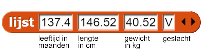

Je Diagram-app Verbeteren
Op deze pagina, ga je werken met een dataset over een klass met 27 leerlingen. Je gaat een
diagram maken van de lengte vs. gewicht, met de jongen en meisjes in verschillende kleuren dat je ook laat
kijken naar individuele datapunten om hun benaderde waardes zien, zoals hieronder:

- Laad je diagrammaker van hiervoor; Hij zou opgeslagen moeten zijn als "H3L4-DiagramApp".
-
Kijk in het Variabelenpalet voor deze dataset over een klas van 27 leerlingen:
.
Ieder datapunt in deze set vertegenwoordigt een persoon en bevat vier items:
-

- leeftijd in maanden
- lengte in centimeters
- gewicht in kilogrammen
- geslacht

-
Maak een selector
leeftijdwat de leeftijd van neemt van een invoerpersoon.
- Maak op dezelfde manier selectors
lengte,gewicht,geslachtdie de lengte, gewicht en geslacht van een invoerpersoon nemen. -
Gebruik nu de selectors van hierboen om nieuwe blokken te maken die het volgende rapporteren:
leeftijden— een lijst met alleen de 27 leeftijdenlengtes—een lijst met alleen de 27 lengtesgewichten—een lijst met alleen de 27 gewichten
Je kan bijvoorbeeldmapgebruiken samen met de selectorleeftijdom een lijst leeftijden te krijgen van de data:
- Maak een blok dat de lijst van een getal neemt als invoer en de gemiddelde waarde rapporteert.
- Maak een blok,
vrouwelijke data, met behulp vanhouddat een lijst rapporteert die alle datapunten van meisjes bevat en een ander blokmannelijke datadie hetzelfde doet voor jongens. -
Je moet de
diagramschaal opstellenvoor al deze grafieken. Zoeken door de data om de laagste en hoogste waardes te vinden kan heel irritant zijn. Maak blokken die dat voor je doen. -
Je hebt nu alles om een diagram te maken van lengte versus gewicht, met de jongens en meisjes in
verschillende kleuren, wat je individuele datapunten laat bekijken om hun benaderde waardes te zien,
zoals in de animatie hierboven. Bouw dit.
De volgende blokken kunnen je helpen om informatie te krijgen die je nodig hebt van je dataset.
-
 Gebruik de blokken die je gebouwd hebt om een paar aparte diagrammen te maken: leeftijd tegen lengte
of gewicht, lengte tegen gewicht, gesorteerd of niet gesorterd op geslacht en
laat het gemiddelde zien in ieder geval. Wat kan je zeggen over deze specifieke klas
gebaseerd op deze data?
Gebruik de blokken die je gebouwd hebt om een paar aparte diagrammen te maken: leeftijd tegen lengte
of gewicht, lengte tegen gewicht, gesorteerd of niet gesorterd op geslacht en
laat het gemiddelde zien in ieder geval. Wat kan je zeggen over deze specifieke klas
gebaseerd op deze data?
Samenwerken is zeer belangrijk om data-problemen op te lossen omdat het de toepassing van meerdere perspectieven en vaardigheden toelaat om inzichten en kennis te krijgen over data die je niet zou krijgen als je alleen zou werken.
-
Het diagram hiervboven laat drie aspecten zien van ieder kind in de klas (lengte, gewicht
en geslacht). Vind een goeie manier om informatie te geven over het vierde element van de data
(leeftijd). Pengrootte is een mogelijkheid maar je kan misschien ook een andere manier vinden.